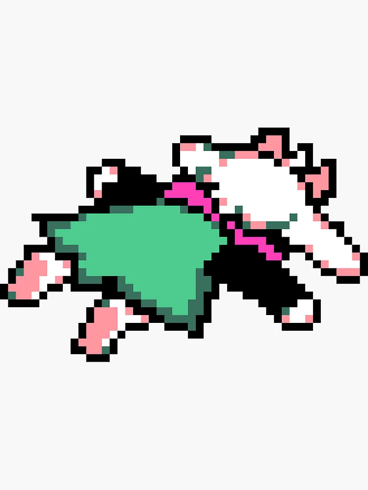

Hello I am Jake, I am a person who likes doing very normal and very non-concerning human activities that you should most definitely not report to the nearest authorities. I like sleeping, and that is pretty much my only hobby; though, I barely get enough of it. My dream job is to be a professional bed-layer, that is, to be laying in bed. Forever. I also am part of this very normal club (not cult) about birbs and how god is an almighty birb that we should all bow down to. I don't know what else to yap about … oh yeah! Erm let me demonstrate how I do my favorite hobby! First, I climb into the bed, then I start doomscrolling for ~24 hours, then I 'sleep' and regret life. 
Apparently I'm supposed to write multiple 'well written' paragraphs with a length of 5-6 sentences. So here I shall yap about birbism, and hopefully convince you to join our unassuming group.
First let us talk about birds, birds are of majestic shape and prowess, they are the natural apex predators of many different islands (such as Hawai'i). We worship the all-knowing, all-mightly,
all-forseeing birb deity that has ~6-7 eyes. Every day we pray to the birb, and the birb rains down their gifts from the skies, if we stop praying, the gifts too shall cease, and what will the
world be without guinea.
There are many new languages evolving, including this new niche dialect of English that I shall now use in a very fluent way.
Today, in your lecture with Jake the Snake, you will learn about different words and the contexts that you can use them.
First is the word "skibidi," honestly I do not even know where this came from, but just sprinkle it in to add an eloquent and poetic flair to your speech.
For example, "erm what the skibidi chat? I think I just got xooked by the ohio no-rizz uglymaxxing-core CSP test." Next we will learn about a new phenomenon called "6-7,"
where adolescents say "sixxxx seeeveen" (very important that the words are enunciated properly) while moving their hands up and down. You can apply this to every day conversation—no one
really knows what it means—but it adds a dramatic flair to your speech nonetheless.